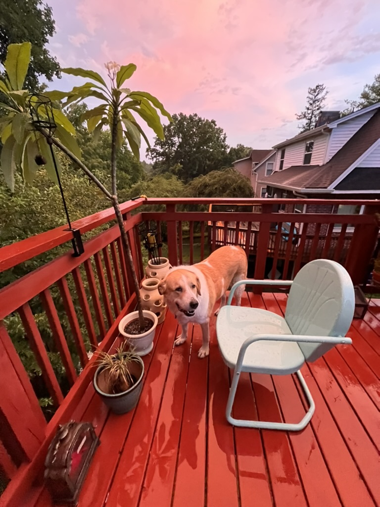

Learn some fun facts about Emmylou and the Great Pyrenees Breed!
1: Fun Facts about Emmylou
Fun facts about Emmylou:
- Did You Know? Groundhogs are excellent diggers and can move over 700 pounds of dirt while creating their burrows.
- Weather Predictors: Groundhogs have a famous tradition of "predicting" the weather every February 2nd on Groundhog Day!
- Big Sleepers: Groundhogs hibernate during winter, falling into a deep sleep for up to six months to survive the cold.
- Even though they can be called woodchucks, they have nothing to do with wood!
Fun Facts about Great Pyrenees
1. They are powerful protectors!
The Great Pyrenees was bred to be a livestock guard dog for the farmers in the Pyrenees Mountains of Europe which form the border between France and Spain. These farmers bred the Great Pyrenees and the smaller Pyrenean Shepherds; the latter was in charge of herding, while the former was in charge of protecting the flock from predators like wolves and bears.
2. They are big for a reason!
Part of the Great Pyrenees's job was to fend off wild animals that wanted to make a meal of the sheep. To help in this capacity, the Great Pyrenees is approximately the same size as the European grey wolf (Eurasian wolf), a common predator the dogs encountered while guarding their flocks.
3. They are independent thinkers
The breed was bred to work as guard dogs, protecting and watching their flocks. As a result, they're independent thinkers. While obedience training may not excite a Great Pyrenees, early socialization and puppy training classes can help them become a well-adjusted, well-mannered companion.
4: They have been around for quite a while!
Breed historians believe that the Great Pyrenees can trace its roots back to a group of mostly white mountain flock guardian dogs that lived in Asia Minor 11,000 years ago. These large, white dogs may have come to the Pyrenees Mountains around 3,000 BC, where they evolved into the Great Pyrenees we know today.
5. They have unique claws
One unique characteristic of the Great Pyrenees is the presence of double dewclaws on their hind legs. Unlike other breeds, where dewclaws are often removed, these are a breed standard for the Great Pyrenees and serve a purpose. They provide extra stability when navigating the rugged mountain terrain of their ancestral homeland.
Closing Section: Want to Learn More?
Whether you're fascinated by their burrowing skills, curious about Groundhog Day, or interested in their ecological role, there's so much more to explore. Stay tuned for more facts and stories about groundhogs here at Groundhog World!